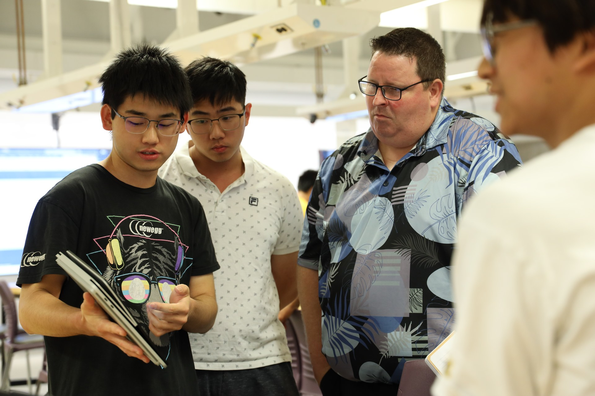
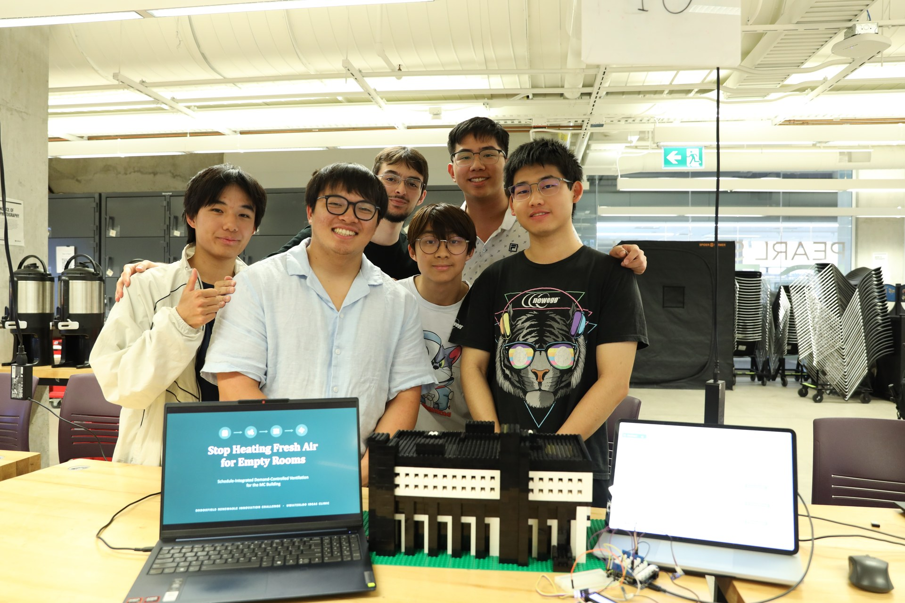
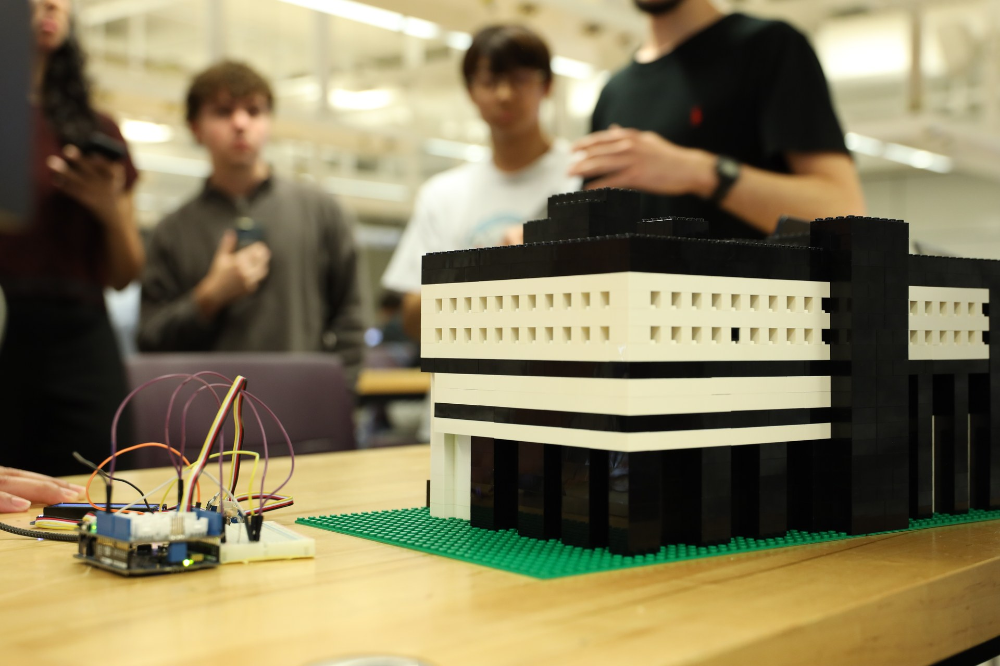
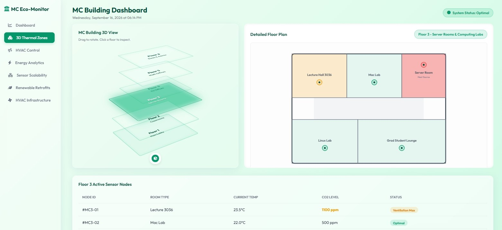
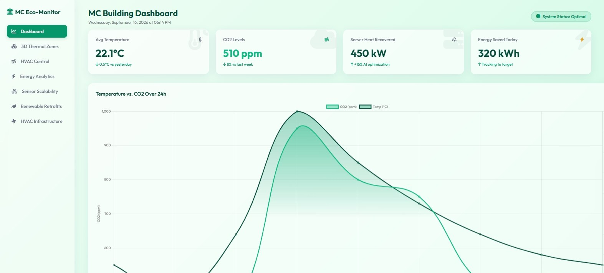
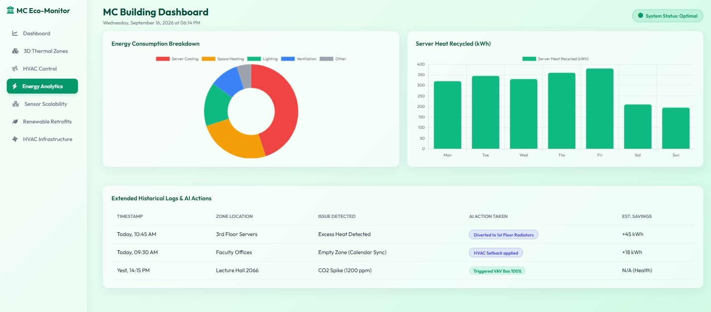
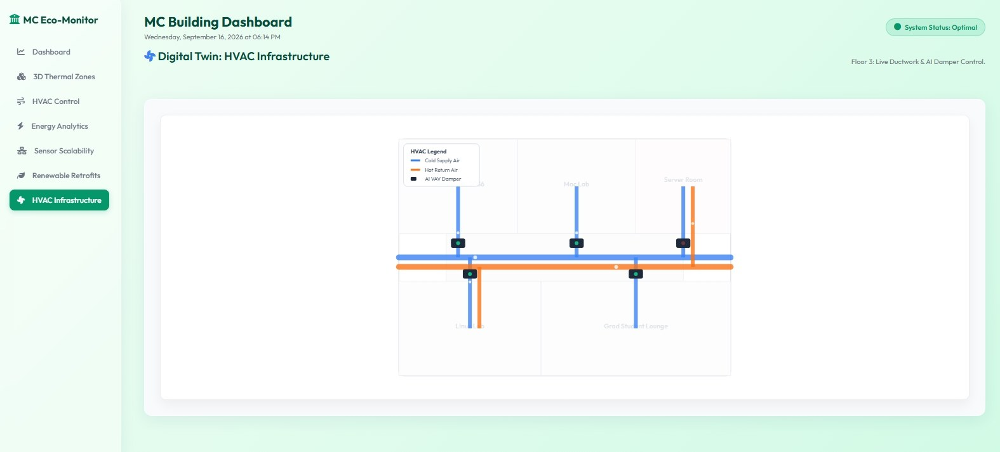

projects / 6
Brookfield Renewable Innovation Challenge — Best Demo
An integrated HVAC optimization and digital twin platform ("MC Eco-Monitor") engineered for campus facilities to eliminate unnecessary fresh-air conditioning in unoccupied rooms. Combining schedule-integrated demand-controlled ventilation (DCV), multi-sensor environmental telemetry, and server waste-heat recovery, the project was awarded Best Demo — 1st Place at the IDEAs Clinic S26 Brookfield Renewable Innovation Challenge.
- Awarded Best Demo — 1st Place across university engineering teams for the most complete physical and software prototype.
- Developed the full-stack "MC Eco-Monitor" dashboard modeling 3D thermal zones, air dampers, and live CO2/temperature curves.
- Integrated a physical Lego smart-building twin instrumented with microcontroller sensors to demonstrate real-time demand setback.
- Official challenge repository: IdeasClinicUWaterloo/S26_Brookfield_Renewable_Innovation_Challenge.
01Live Presentation & Hardware Twin
- Constructed a modular scale model of the Mathematics & Computer (MC) building integrating physical Arduino telemetry nodes.
- Demonstrated live airflow modulation where rooms automatically setback conditioning when room calendar schedules indicate zero occupancy.
- Presented full hardware-in-the-loop telemetry to Brookfield Renewable industry judges and Waterloo Engineering faculty.
Live Judging · Project Demo

Competition Team · DC Building Model

Competition Presentation — Demonstrating the live IoT telemetry dashboard and physical Lego building twin to industry evaluators.
Hardware Twin · Breadboard Sensor Circuit

Instrumented Scale Model — Multi-floor Lego architectural model wired to breadboard microcontrollers for localized temperature and air quality monitoring.
02Digital Twin & Energy Analytics Dashboard
- Built interactive 3D floor plan projections tracking per-room temperature, CO2 concentrations, and active occupancy states.
- Visualized 24-hour demand curves showing automated energy recovery and intelligent VAV damper throttling during peak usage.
- Tracked server room heat harvesting metrics, redirecting thermal exhaust into lower-level building heating circuits.
3D Thermal Zones · Floor Plan

Main Dashboard · 24h Curves

Real-Time Facility Monitoring — Multi-layer 3D thermal zone inspection alongside continuous 24-hour temperature and carbon dioxide telemetry.
Energy Analytics · Heat Recycling

Digital Twin · HVAC Infrastructure

Infrastructure & Energy Optimization — Server room heat recycling tracking and schematic digital twin of cold supply and hot return air ducts.
03Interactive Live Dashboard Demo
Live Prototype. Explore the fully functional "MC Eco-Monitor" dashboard below. Switch between tabs to inspect 3D thermal zones, HVAC controls, and energy analytics.
Embedded Web Demo — Fully interactive simulation of the facility energy dashboard engineered for the competition submission.